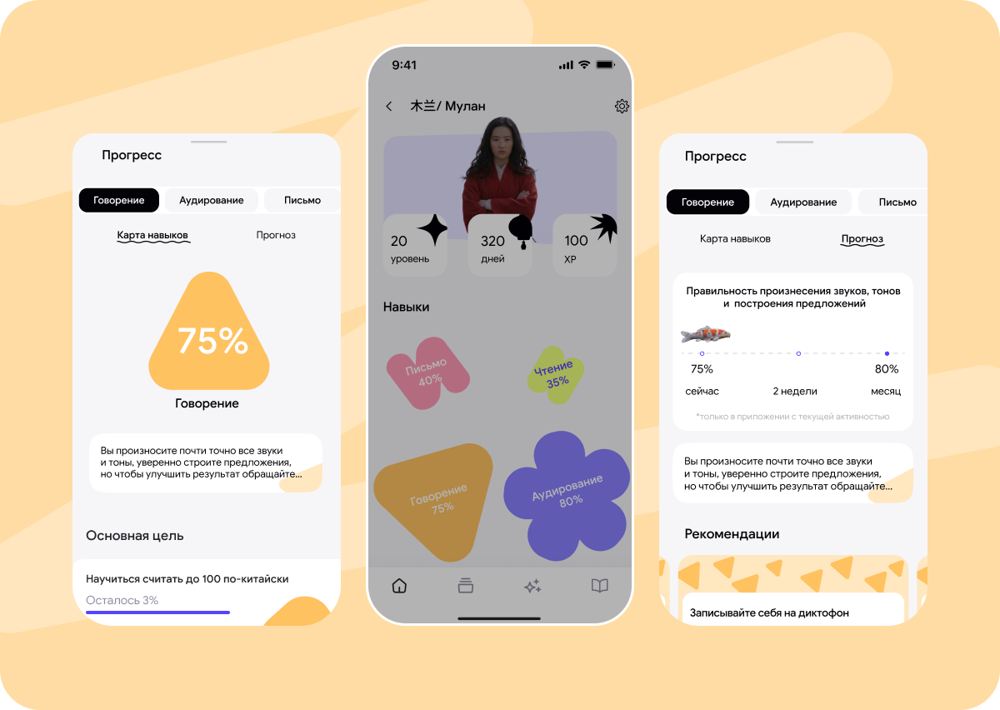
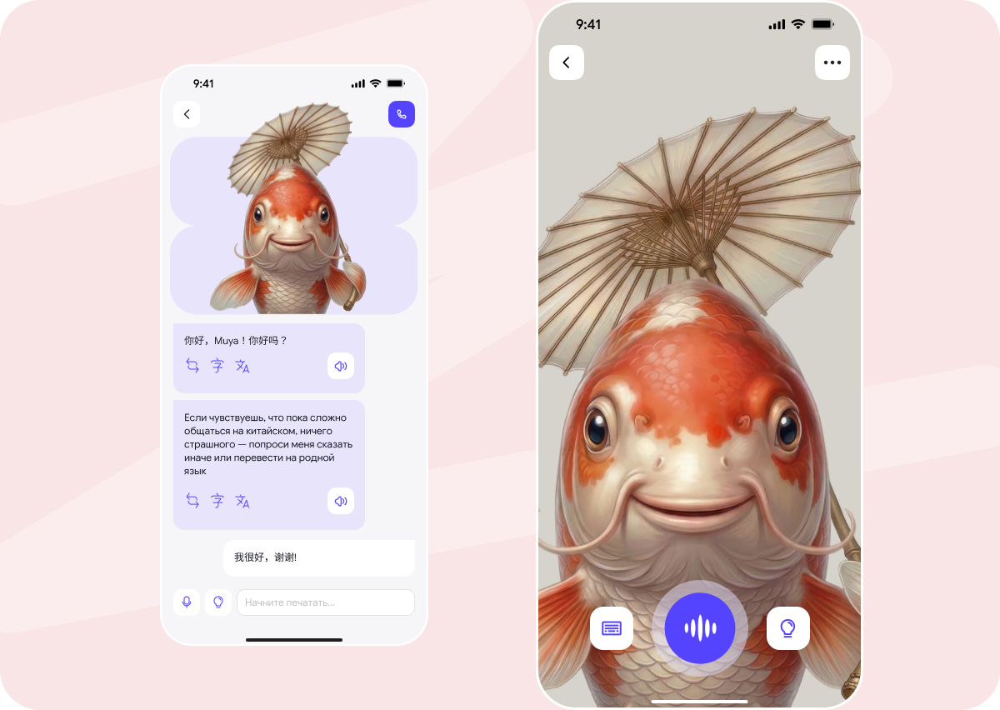
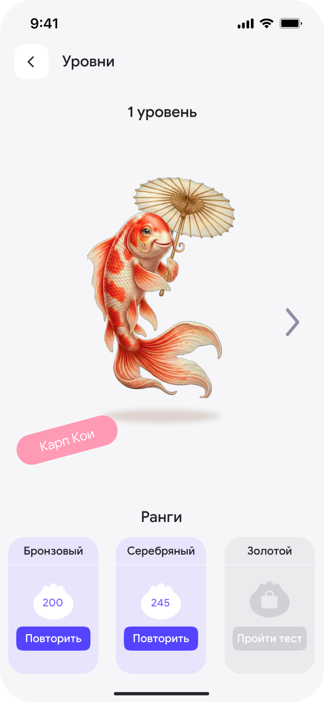
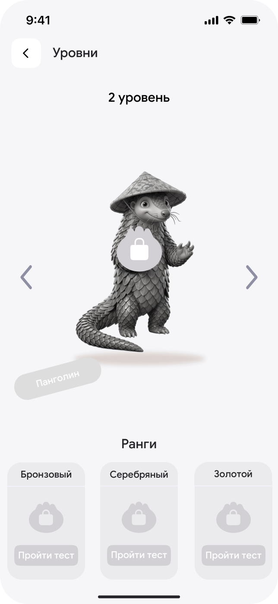

Карта навыков
Главной задачей было создать профиль-центр, где пользователь видит
прогресс, цели, уровни, и может отследить свои результаты. Мы выявили
также потребность в кастомизации цели и стимулировании пользователя
за счёт краткосрочных прогнозов

Не хватает общения
Заказчик хотел бы в перспективе добавить возможность общения
с преподавателем, но сейчас такой возможности нет, поэтому мы подумали,
что можно развить функцию «ИИ-диалоги» с помощью ассистента, с которым
можно было бы переписываться, созваниваться или задать любой вопрос
по изучению языка

В одном месте
В ходе исследования мы обнаружили, что пользователям не хватает одного
пространства для отработки лексики, чтобы в любой момент иметь
возможность вернуться и повторить всё, что накопилось. Мы предлагаем
встроить умную камеру, которая оцифрует текст или отсканирует предметы
и предложит перевод

Любитель культуры
Китайский язык неразрывно связан с культурой Китая, поэтому для еще более
активного погружения мы предлагаем визуализацию уровней с мифическими
персонажами, сплеш экран с привязкой к праздникам и важным событиям

